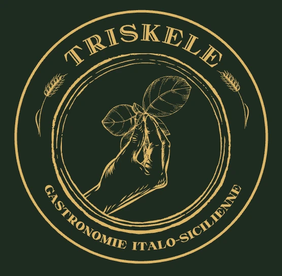

Triskele Gastronomie
Sito web realizzato con Angular e strumenti AI a supporto dello sviluppo.
Sviluppo applicazioni web moderne, intuitive e performanti utilizzando Angular, TypeScript e tecnologie front-end avanzate. Integro strumenti di intelligenza artificiale per creare soluzioni efficienti e scalabili.
Un insieme di strumenti per creare soluzioni moderne e scalabili.
Un progetto pubblicato, un prototipo interattivo in sviluppo e nuove idee in preparazione.

Sito web realizzato con Angular e strumenti AI a supporto dello sviluppo.
Gioco puzzle mobile: posiziona rampe e blocchi per guidare una pallina fino al traguardo.
Uno spazio per future demo front-end, pubblicate solo quando saranno pronte.
Sono Francesco Raciti, Front-End Developer con esperienza professionale dal 2022. Lavoro con Angular, TypeScript, RxJS, Signals, componenti standalone e integrazione di API REST.
Utilizzo strumenti come Claude Code e agenti AI per supportare sviluppo, analisi e prototipazione.
✓ Interfacce intuitive e responsive
✓ Componenti riutilizzabili
✓ Integrazione con servizi backend
✓ Apprendimento continuo
Hai un'idea o una proposta di collaborazione? Contattami.